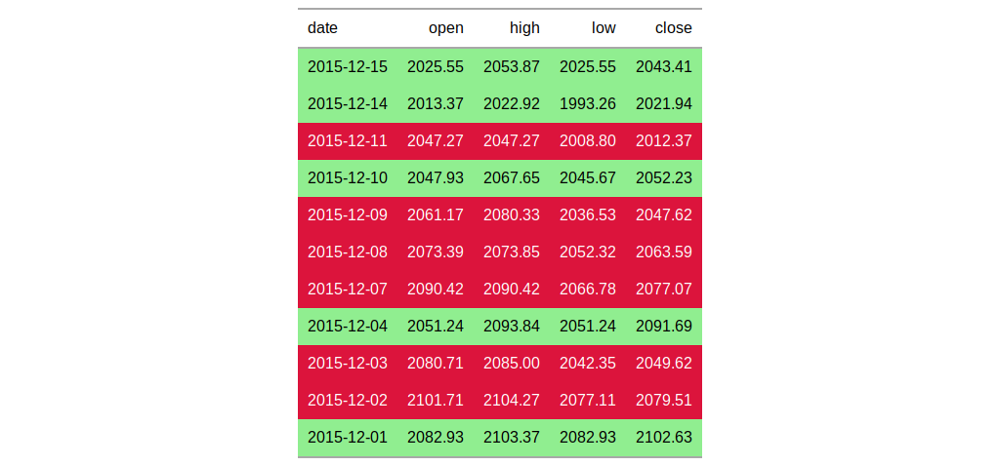

| tab_style {gt} | R Documentation |
With the tab_style() function we can target specific cells and apply
styles to them. This is best done in conjunction with the
cells_styles() helper function. At present this function is
focused on the application of styles for HTML output only (as such, other
output formats will ignore all tab_style() calls). With the help of
cells_styles(), we can set the following styles:
the background color of the cell (bkgd_color)
the cell's text color (text_color), font (text_font), or
size (text_size)
the text style (text_style), enabling the use of italics or
oblique text.
text decoration (text_decorate): use overlines, line-throughs,
or underlines
text transformations (text_transform) that result in lowercased,
uppercased, or capitalized text
the text weight (text_weight), allowing the use of thin to
bold text (the degree of choice is greater with variable fonts)
the alignment of text (text_align)
a stretching property for text that condenses or expands text
(text_stretch)
the text indentation (text_indent)
tab_style(data, style, locations)
data |
a table object that is created using the |
style |
a vector of styles to use. The |
locations |
the cell or set of cells to be associated with the style
Supplying any of the |
an object of class gt_tbl.

cells_styles() as a helper for defining custom styles
and cells_data() as a useful helper function for targeting
one or more data cells to be styled.
Other table-part creation/modification functions: gt_preview,
gt, tab_footnote,
tab_header, tab_options,
tab_row_group,
tab_source_note, tab_spanner,
tab_stubhead_label
# Use `exibble` to create a gt table;
# add styles that are to be applied
# to data cells that satisfy a
# condition (using `tab_style()`)
tab_1 <-
exibble %>%
dplyr::select(num, currency) %>%
gt() %>%
fmt_number(
columns = vars(num, currency),
decimals = 1
) %>%
tab_style(
style = cells_styles(
bkgd_color = "lightcyan",
text_weight = "bold"),
locations = cells_data(
columns = vars(num),
rows = num >= 5000)
) %>%
tab_style(
style = cells_styles(
bkgd_color = "#F9E3D6",
text_style = "italic"),
locations = cells_data(
columns = vars(currency),
rows = currency < 100)
)
# Use `sp500` to create a gt table;
# color entire rows of cells based
# on values in a particular column
tab_2 <-
sp500 %>%
dplyr::filter(
date >= "2015-12-01" &
date <= "2015-12-15"
) %>%
dplyr::select(-c(adj_close, volume)) %>%
dplyr::mutate(date = as.character(date)) %>%
gt() %>%
tab_style(
style = cells_styles(
bkgd_color = "lightgreen"),
locations = cells_data(
rows = close > open)
) %>%
tab_style(
style = cells_styles(
bkgd_color = "crimson",
text_color = "white"),
locations = cells_data(
rows = open > close)
)